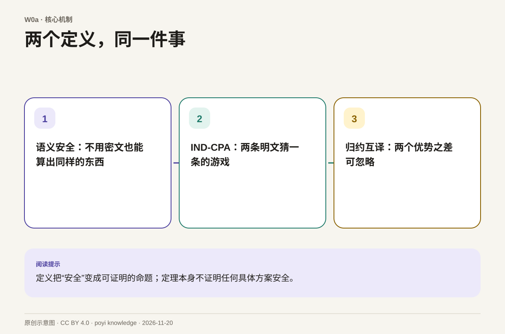
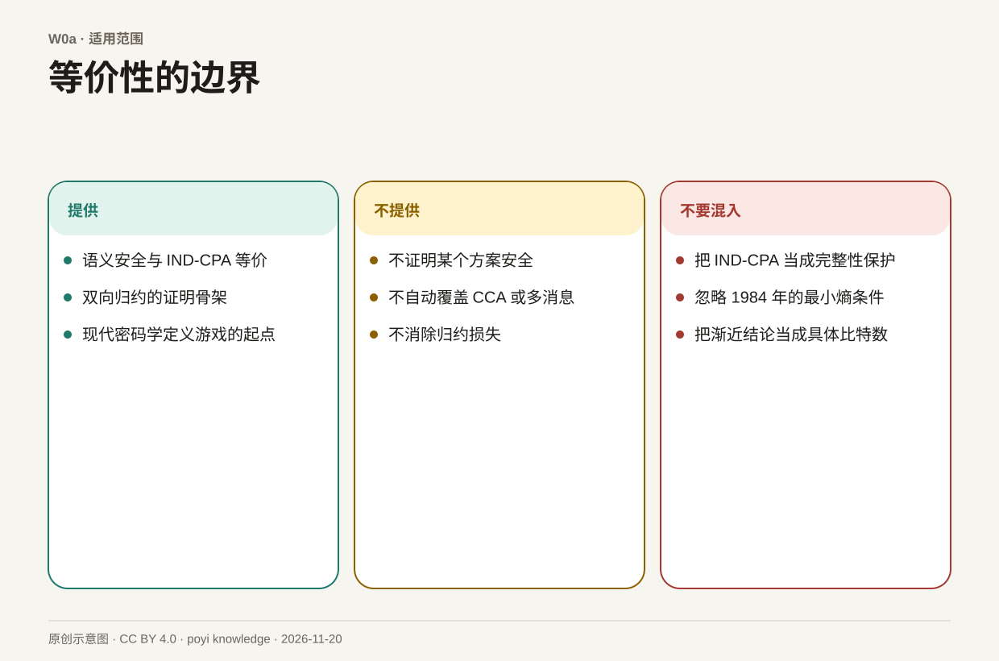

原理与机制
定理：语义安全与 CPA 等价（Semantic Security ≡ IND-CPA）。这条定理说：语义安全和 IND-CPA 这两种看起来完全不同的安全定义，刻画的是同一件事。
语义安全（semantic security）：光有密文不够——攻击者能"算出"明文的什么，得看他不用密文时能算出什么。形式上：加密方案 E 是语义安全的，当且仅当对每一个概率多项式时间攻击者 A，都存在一个模拟器 S（不看密文），使得 A 在真实世界（拿着密文）里对明文计算出的任意函数 f 的成功率，不比 S 在"假装有密文"的情况下的成功率高出可忽略的量。注意量词里的"存在 S"：安全的含义不是"没人算得出来"，而是"算得出来的和算不出来的看不出差别"。
IND-CPA（选择明文攻击下的不可区分性）：这是一个游戏。挑战者生成密钥，攻击者提交两条等长明文 m0、m1；挑战者随机选一位 b ∈ {0,1}，把 Enc(m_b) 交给攻击者；攻击者输出 b'。优势定义为 Adv = |Pr[b' = b] - 1/2|。方案是 IND-CPA 安全的，当且仅当对每一个概率多项式时间攻击者 A，这个优势都是可忽略的。定理（等价性）：对任何加密方案 E，下面两条等价：
1.E 是语义安全的； 2.E 是 IND-CPA 安全的。为什么这个定理值得单独说？ 因为两个定义的形状完全不同。IND-CPA 问的是"这两条消息你分得清吗"——一个非黑即白的猜谜游戏；语义安全问的是"关于明文的一切你能算出来的，你不用密文是不是也能算出来"——一个开放式的、由攻击者自己挑函数的游戏。两个问法不同的问题，答案一样。
归约证明的思路（这是整个现代密码学的看家本领）：把两个定义互相翻译。- 一个方向：假设存在一个 IND-CPA 攻击者能高概率猜中 b。那就给他一个更简单的任务——把消息空间限制成 {m0, m1}，定义 f(m0) = 0、f(m1) = 1，让他拿着密文去算 f(x)。他的成功率正好就是猜 b 的成功率；而一个不看密文的模拟器只能瞎猜，成功率 1/2。"算得准"和"分得清"是同一件事。
- 另一个方向：假设存在一个语义安全攻击者能拿着密文算出
f(x)，比模拟器更准。那就反过来造一个"猜b"的攻击者：让他拿一条随机消息的密文去跑那个计算，再拿模拟器的输出和它比一致不一致。一致的概率超过了瞎猜，就说明密文确实帮了忙——于是他就能区分两个世界。
两次翻译的差值，就是两个优势之间的差值。数学上写成一句话：两个定义等价，当且仅当它们的差是零。
几个必须说清的技术前提。 第一，1984 年原始的等价性带一个条件：攻击者所选明文的概率分布要有"最小熵"要求，否则两边都退化成平凡情况。第二，单条消息和多条消息不是一回事，多条要靠混合论证（hybrid argument）——把 n 条消息一条一条换成随机串，每换一条记一笔差，最后用"至少有一条猜错"来收尾。第三，当年的等价性只在选择明文模型下成立；Watanabe、Shikata 与 Imai 在 2003 年证明，在任意攻击模型（选择明文、选择密文、非自适应与自适应）下 SS 与 IND 都等价。

为什么重要
因为它把"安全"从一句形容词变成了一道可以证明的题。这是现代密码学的起点，也是它区别于古典密码学的分水岭。
在 Goldwasser 与 Micali 之前，问"这个方案安全吗"没有可证伪的答案。你可以举出攻击，也可以说"我没找到攻击"。1982 年之后，问题变成："在 XX 假设下，本方案是 IND-CPA 安全的"——这句话可以被证明，也可以被推翻。
1.它让"证明"成为可能。 定义给了一把尺子，"归约到困难假设"就成了目标。今天几乎每一篇密码学论文的第一句和最后一句都是这个句式：先声明定义，再声明假设，再给归约。这是从手艺到科学的转变。 2.它让攻击模型可以分层。 因为有了 IND-CPA 这个中间刻度，人们才能清楚地讨论"再给他一个解密预言机会会怎样"——于是有了 IND-CCA2；才能讨论"他能不能把密文改成另一个有关系的密文"——于是有了非可延拓性。Dolev、Dwork 与 Naor 1991 年那篇《Non-Malleable Cryptography》举的例子很形象：三个玩抛硬币游戏的玩家，公钥加密本身语义安全，但其中一个玩家照样能操纵结果。语义安全只防被动窃听，不防主动参与者——这是 Dwork 这条线补上的洞。 3.它定义了什么叫"够安全"。 现代密码学不追求"绝对安全"，只追求"在某个明确的攻击模型下，对某类资源有限的攻击者，给出一个可量化的优势上界"。这套语言是从这里来的。还要说清这个定理没有做什么：它没有证明任何方案是安全的，它只是把"安全"重新表述了一遍。真正的力量来自"归约"——把 IND-CPA 归约到分解整数难、离散对数难、格问题难这些假设上。定义是骨架，假设是肌肉。
应用与实例
IND-CPA 已经是今天几乎所有真实方案的入场券，写在每一份安全声明里。
- 对称加密：几乎自动满足。 理由要说准：现代对称加密（AEAD：GCM、CCM、ChaCha20-Poly1305）用的是"每次加密配一个全新随机 nonce"。对固定密钥而言，加密函数是一个置换——每条明文恰好对应一个密文。攻击者拿到密文，除了"猜"没有别的办法，而"能猜出明文"恰恰等价于"能区分置换和随机函数"，那就是分组密码 PRP 安全性的定义本身。所以：底座是安全 PRP + 每次用新 nonce ⇒ IND-CPA 成立，几乎白送。 反过来，确定性的加密不满足 IND-CPA：ECB 模式下两条相同明文产生相同密文，攻击者只要提交
m0 = m1，密文一比就赢了。所以"对称加密都安全"这句话必须补上"随机化"这个前提。- 公钥密码：RSA-OAEP（Bellare 与 Rogaway 在随机预言机模型下给出 IND-CPA 证明）、ElGamal（DDH 假设下）、ECIES、Cramer–Shoup（IND-CCA2 的教科书方案）。- 协议层的硬规矩：TLS 1.3 只允许 AEAD 套件，禁止 ECB 与静态 IV 的 RSA 密钥交换；几乎所有 TLS 库都把"nonce 唯一"做成 API 级约束或计数器。这些规矩的源头就是 IND-CPA——没有随机化就没有 IND-CPA。 - 学术论文的固定句式：新方案的第一行几乎总是"In the random oracle model, our scheme is IND-CPA secure under the ...assumption"，然后是一串归约。
边界与攻击面
这条定理的"边界"比它的"结论"更值得记住。
- IND-CPA 只管机密性，不管完整性。 定义里没有"密文被改了会怎样"这一栏。现实后果就是 90 年代 CBC 模式的连环惨案：IV 可控、padding 可验证的加密让攻击者能构造"合法密文"，再用 padding oracle 一点点把明文抠出来。必须补上 INT-CTXT（认证加密），或者老老实实 Encrypt-then-MAC。
- 为什么 CCA 不满足？ 因为一旦给了解密预言机，攻击者可以把密文改一改再送去解密。三个经典例子：ElGamal 是可延拓的——密文
(g^r, m·g^r)乘一个t就变成m·t的密文；CBC 改 IV 就改了第一个明文块；OAEP 同样能被可延拓地改造。IND-CPA 的"密文不泄露信息"在有解密器的情况下立刻失效——这就是 IND-CCA2 和 AEAD 存在的理由。- 等价性本身有前提。 1984 年的原始等价性要求明文分布满足最小熵条件；单条消息与多条消息需要混合论证才能划等号；CCA 模型下的等价是 2003 年才补上的。"等价"不是天上掉下来的，是一代人收拾出来的。 - 归约有损失。 从 IND-CPA 归约到某个困难假设时，代价往往写成
Adv_E(A) ≤ 2 × Adv_assumption(B)。那个系数 2、或者多项式因子，就是"证明里丢掉的比特"：论文说"128 位安全"，归约一算可能只剩 126 位。归约紧不紧，是密码学里实打实的攻防。 - 定义本身不产生安全。 它只是把"安全"重新说了一遍。真正干活的永远是"归约到假设"，而假设是未证明的——分解整数难不难、离散对数难不难，至今没人证明过。- 定义管不到的地方一大把：侧信道、故障注入、密钥泄露、随机数发生器被攻破、协议层的降级与重放、实现里的整数溢出。"IND-CPA 安全"是对算法的评价，不是对系统的评价。
- 最常见的现实翻车点还是老问题：nonce 重用（GCM 用同一个 nonce 两次 → 密钥流重复 → 明文直接泄露、标签可伪造）、RNG 没播种、ECB 被偷偷用上。这些都不违反定理，它们违反的是定理的假设。

历史与背景
- 1982 年：Goldwasser 与 Micali 在 FOCS 发表《Probabilistic Encryption》（1984 年在《Journal of Computer and System Sciences》第 28 卷第 2 期正式刊出，270–299 页）。论文里有两个东西：一个是"语义安全"（一切能算出来的，不用密文也算得出来），一个是后来被叫作 IND-CPA 的"多项式安全"（两条明文猜一条）。两者等价，是这篇论文里最早的一次 game hop——按今天的标准看，它就是整个密码学史上第一次游戏跳。
- 1984 年：Rivest 发表《Semantic Security for Encryption Functions》，把语义安全搬到私钥加密上，给出更精确的形式和一个反例。"语义安全"这个词从此固定下来。
- 1986 年：Goldreich、Micali 与 Wigderson 发表《How to Prove Cryptographic Protocols Secure》——零知识证明，定义的威力被展示到协议层。- 1988 年：Goldwasser、Micali 与 Rivest 的签名方案定义了 EUF-CMA，签名安全也有了"游戏"。- 1991 年：Dolev、Dwork 与 Naor 发表《Non-Malleable Cryptography》。他们用一个"三人抛硬币"的玩具协议说明：语义安全只防被动窃听，对付不了主动参与者。 非可延拓性由此入列，Dwork 这条线也由此展开。- 1998 年：Bellare、Desai、Pointcheval 与 Rogaway 发表《Relations among Notions of Security for Public-Key Encryption Schemes》，把语义安全、不可区分性、非可延拓性在 CPA / CCA1 / CCA2 下的关系图理了出来。这张图至今仍是读定义的人的第一张地图。
- 2001 年：Bellare 与 Rogaway 发表《Code-Based Game-Playing Proofs and the Security of Triple Encryption》，把"游戏"变成代码，确立 "fundamental lemma of game playing"——两个游戏若"除 bad 事件外完全一致"，优势差就不超过 bad 事件的概率。今天几乎每篇安全证明都是这个句式。
- 2003 年：Watanabe、Shikata 与 Imai（PKC 2003）证明在任意攻击模型下 SS 与 IND 等价；Goldreich 在教材里独立给出同一结论。- 2012 年：Goldwasser 与 Micali 因"现代密码学定义的奠基性工作"获 ACM 图灵奖。- 今天：IND-CPA 是所有新方案的入场券，也是所有产品文档里那句 "supports AEAD" 的理论出处。
逐步示例与核验
形式模型与复算步骤
[\Pr[\mathrm{Bad}_A(\lambda)]\le \varepsilon(\lambda)]
语义安全与 CPA 等价的公开参数、密钥/随机数与消息；变量说明：Bad 为归约中定义的失败事件，ε 为可忽略函数。1.定义失败事件。2.构造归约把攻击者转成困难问题求解器。3.证明失败概率上界。边界：公式只覆盖已登记的参数与假设；参数取值、标准版本和实现细节仍以来源为准。
参考出处
- Wikipedia search entry for 语义安全与 CPA 等价. https://zh.wikipedia.org/w/index.php?search=%E8%AF%AD%E4%B9%89%E5%AE%89%E5%85%A8%E4%B8%8E%20CPA%20%E7%AD%89%E4%BB%B7
- Handbook of Applied Cryptography (Menezes, van Oorschot, Vanstone). https://www.cacr.math.uwaterloo.ca/hac/